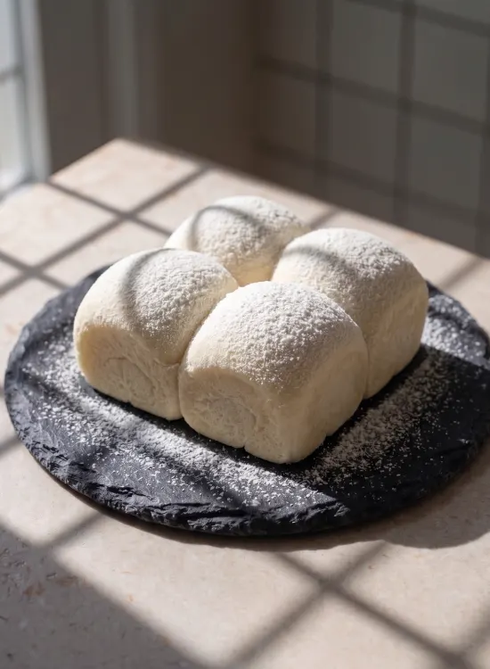

北海道ミルク雪
Yuki Hokkaido-Milk Cloud
Inspired by the pristine snowscapes of Northern Japan, this cloud-soft milk bread features an impossibly tender crumb lightly dusted with pure Hokkaido milk powder. Melt-in-your-mouth lightness meets deep, wholesome creaminess for an effortlessly luxurious taste of comfort.